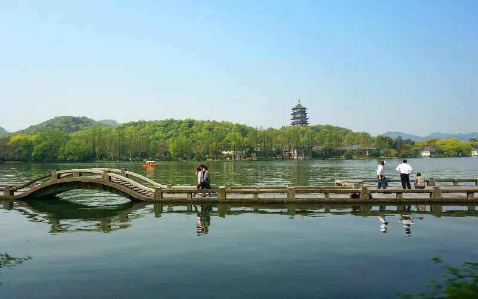
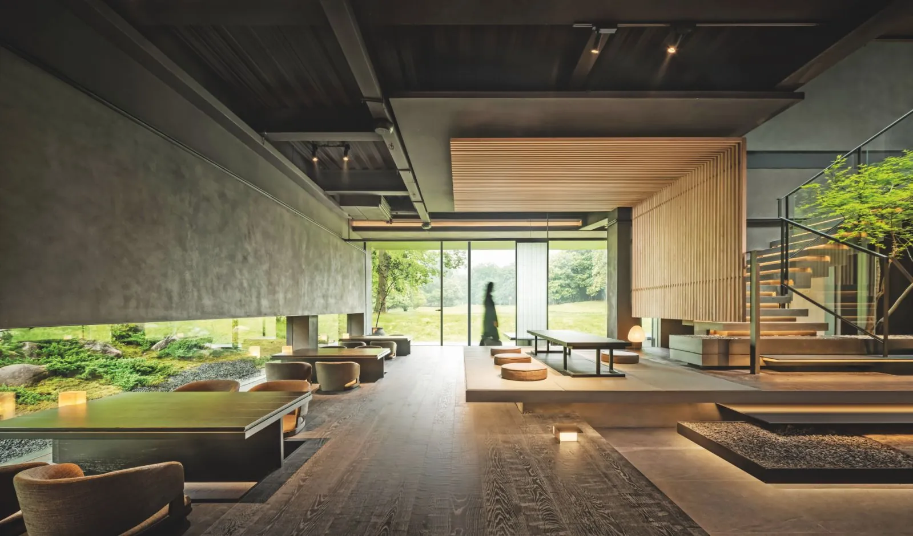
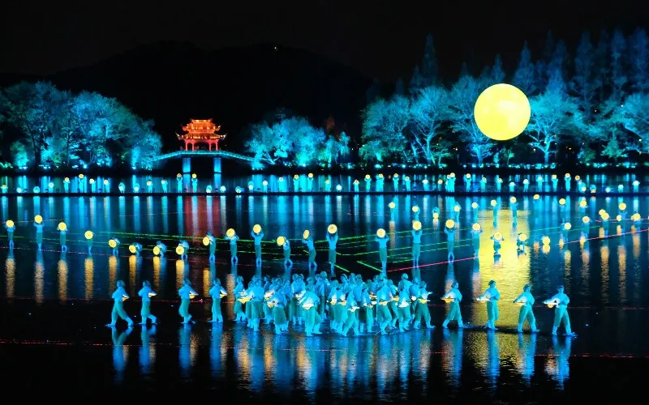
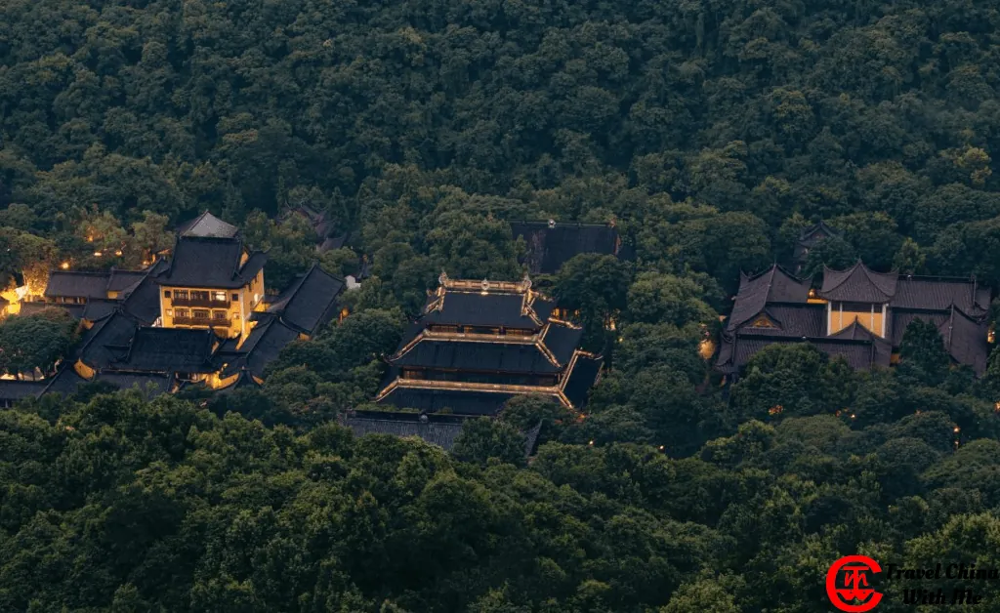
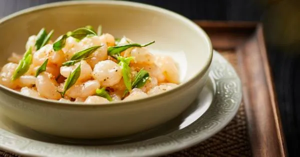

The calculus of a Hangzhou weekend is deceptively simple: secure the dinner first. Ru Yuan — eight tables in a pinewood sanctuary inside the Botanical Garden, four decades of Southern Song court cooking channeled through chef Fu Yueliang — opens next-month reservations on the 1st of each month and they're gone in minutes.[3] Every other decision flows from that date.
Should Ru Yuan prove elusive, Jie Xiang Lou is no consolation prize. Promoted to 2-star in 2026 and led by inaugural Michelin Mentor Chef Award winner Bin Yu,[4] its thirteen private rooms in a bamboo-forest hillside resort offer a different but equally deliberate experience.
Both 2-stars sit in Xihu District — the same district as West Lake, the Botanical Garden, and the causeways the Northern Song poet Su Dongpo built a thousand years ago. Geography, for once, consolidates everything. A morning walk on Su Causeway, a boat to Three Pools Mirroring the Moon, Leifeng Pagoda at sunset, then dinner: this is the architecture the city was designed to produce.
Day 2 front-loads Lingyin Temple at 7 AM before the crowds that arrive by 10, then opens into tea country or the Xixi Wetland boat ride. Somewhere in the two evenings, Zhang Yimou's Impression West Lake needs a slot — performers on a stage set 3 cm below the water surface, the second seating at 21:10. Which night gets the show is the only question the itinerary leaves open.

A pinewood sanctuary commissioned inside the Hangzhou Botanical Garden. Chef Fu Yueliang — trained under master Dong Shunxiang at the century-old Zhiweiguan institution — channels four decades of Southern Song court cooking through eight tables in a space architect Louis Liou transformed over three years.[2]
Signature dishes include a Pagoda Dongpo Rou and a deboned West Lake fish with all 79 bones displayed. Nature as co-host — the botanical garden presses against every window.
Promoted from 1-star to 2-star in the 2026 Michelin Guide — the same ceremony at which chef Bin Yu received the inaugural Michelin Mentor Chef Award.[4] Thirteen private rooms in a bamboo-forest hillside resort, each with enclosed forest views and a quieter, more secluded register than Ru Yuan's botanical garden.
Modern Jiangnan cuisine. Not walkable from the lake — 10 minutes by taxi from the Hubin waterfront. Dinner ends at 20:30; the earlier close is the key scheduling variable.[5]

Ru Yuan closes at 21:00.[7] Jie Xiang Lou's dinner service ends at 20:30.[5] Impression West Lake has its second seating at 21:10.[8] The gap exists — barely — but requires the earliest available dinner slot and a fast taxi.
The cleaner call is to split them across nights: dinner on one evening, the show on the other. Which night gets which is the only question the research leaves to you.

